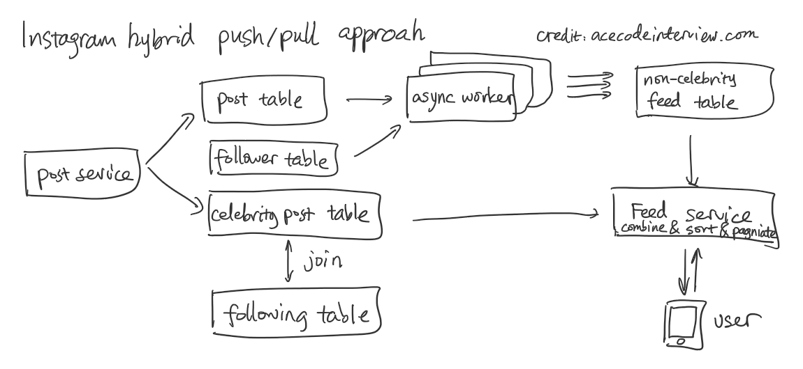
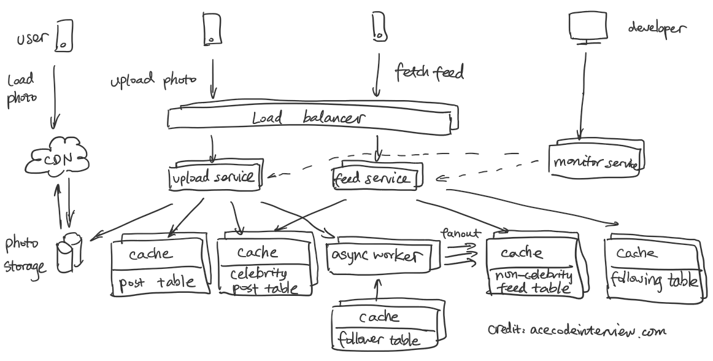
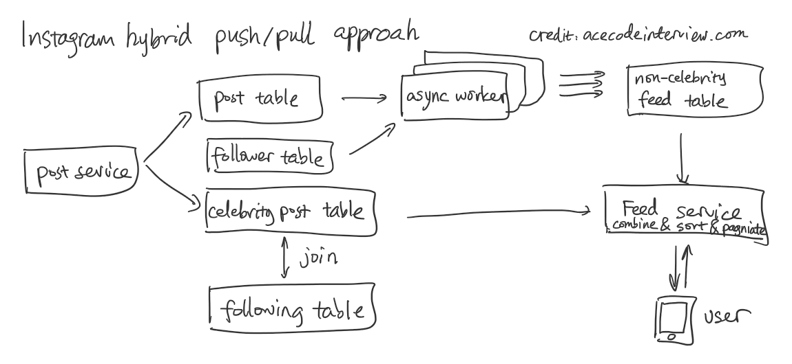
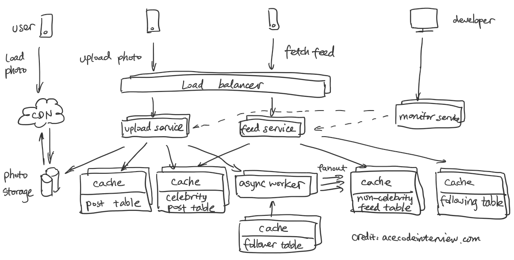

grokking system design solution
Ace system design interview(Who claims to be Interviewer from FLAG)
News Feed 适用于:
US: Facebook/Twitter/Instagram
China: WeChat朋友圈/新浪微博
Step1 : Scenario = requriement + capacity
Requirement:
a.Follow user
b.news feed/timeline
Capacity:
DAU: FB 1.5B, Ins ( 500M)
QPS: say one user has 10 operations per day
1.5B * 10 / 86400 = 150k for FB, 50k for INs. 分析这是read traffic还是write traffic, read traffic可以用cache优化.
Bandwidth:
bandwidth = QPS * average request size or response size
Assuming average request size is 20KB, average response size is 2MB( it returns image, the response size should be large.)
ingress bankdwith = 150K * 20kb = 300MB/s from all DC
egresscccdd bandwidth = 150K * 2Mb = 300GB/s
Storage : say per day adding 2M pictures, each picture has in avarage 200KB, one day
we need 2M * 200kB = 400MKB = 400G disk. in one month, we need, 30*400G = 12000G = 12TB disk. so photos cannot be stored in one machine, what we need is distributed file storage such as S3.
Step2: Service
Draw architecture:
Web server + Application server + DB
Step3: Storage:
We need 3 metadata tables and 1 storage.
User table, picture table, Friendship table and storage for picture.
3.1. table schema / 8.12
storeage for table
image table:
id 4byte + user id 4byte + title 50byte + createdAt 50 byte + image path = 256Byte = 364 Byte
364Byte * 2m = 0.7G per day, 21GB per month. 240GB per year. (1 server can hold)
user table:
id 4Byte + name 20byte + email 50byte + created At 4Byte + last login 4Byte = 82byte
say there is 2B user. total size = 82 Byte * 2B = 160GB (1server can hold)
Friendship table:
id 4byte, from 4 byte, to 4 byte, total 12byte
2B users, each user follow 100 user, total = 500M * 100 * 12byte = 0.6TB. ( 1 server)
Table schema:
User table
id int PK
name varchar(25)
email varchar(30)
updatedAt timestamp
createdAt timestamp
photo table
id int PK
userId int FK
title varchar(50)
createdAt timeStamp
ImagePath varChar(50)
frinedship table
id int PK
from int
to int
3.2 SQL vs NoSQL
SQL: schema: SQL, MYSQL, Oracle
NoSQL: schemaless: key/value : Redis, Memcached(1M)
Row key/Column key : Cassandra
Document type: MongoDB
Graph DB:
SQL NOSQL
No automatica sharding/replication. Need to do manually Automatical sharding/replication(more server)
ACID (atomicity, consistency, isolation, durability) Sacrifice ACID for high performance and schalability
Automatic ID increment
Tranaction. You get either all or none.
When to use SQL: 1. ACID(bank) 2. data unchanged
When to use NOsql : 1. data with no schema and are changing 2. cloud based storage(automatical sharding, replication, save money)
3.3 Component optimization
Read and Write go to different webserver.
Write traffic writes image to disk, it is slow. If write traffic flood the web server, service apppool will be hot, read traffic will be queued in kernel mode and then when queue is full, it starts to reject request and the subsequent request will not be served.
Generate News feed for sam whose user id is 1
select photo.title, photo.user_id, photo.createdAt from
(select * from friendship where from_user = 1) as f
left join photo
on f.to_user = photo.user_id
order by photo.createdAt;
// Sql statment to creat table and insert value
create database ins // create database
use ins// use database
// create user table
create table user(id int not null auto_increment, name varchar(50) not null, email varchar(50), primary key (id));
// insert value;
insert into user (name, email) values ("Lyn", "lzengzeng22@gmail.com");
insert into user (name, email) values ("Mark", "mark@gmail.com");
insert into user (name, email) values ("Jay", "mark@gmail.com");
insert into user (name, email) values ("NanXia", "Nan@gmail.com");
insert into user (name, email) values ("Jing", "Jing@gmail.com");
// create friendship table;
create table friendship(id int not null auto_increment, from_user int not null, to_user int not null, primary key (id));
insert into friendship (from_user, to_user) values (1, 2);
insert into friendship (from_user, to_user) values (1, 3);
insert into friendship (from_user, to_user) values (1, 3);
insert into friendship (from_user, to_user) values (2, 5);
insert into friendship (from_user, to_user) values (2, 3);
insert into friendship (from_user, to_user) values (4, 3);
// create photo table
create table photo(id int not null auto_increment primary key, user_id int not null, title varchar(100) not null, image_path varchar(50) not null, createdAt TIMESTAMP DEFAULT CURRENT_TIMESTAMP );
insert into photo (user_id, title, image_path) values (3, "Japan photo", "Azure/Jay");
insert into photo (user_id, title, image_path) values (2, "California San Diego photo", "Azure/Mark");
insert into photo (user_id, title, image_path) values (3, "Cancun trip", "Azure/Jay");
此处还可以用NOSQL DB 来存用户和照片的关系, 哪个用户拥有哪些照片,
key: userID
value: List of photoIDs.
2->{100,101}
3->{102,103}
Pull mode:
/* 这种join的方法是不对的,因为会把To_User的所有image都取出来. 如果这些人有10年的照片你就得取10年的照片.
select photo.title, photo.user_id, photo.createdAt from
(select * from friendship where from_user = 1) as f
left join photo
on f.to_user = photo.user_id
order by photo.createdAt;
take 100
*/
正确的做法是DB N次Read然后在Sort.
Http Get API: Time Complexity O(N)
getNewsFeed(user)
{
toUsers = FollowerDB.read(user);
resonse = empty;
for( User : toUsers)
response.insert = DB.read(user, 100);
response.sortBy(timeStamp).take(100);
}
HTTP POST API: O(1)
postImage(user, image)
{
ImageDB.insert(user, image);
}
 Push mode:
When I publishes a photo, it is going to fan out the message to all users that are following me.
FeedTable
id int PK
userId FK
photoId FK
createdAt TimeStamp
HTTP GET API: Time Complexity O(1)
getNewsFeed(user)
{
newsFeedDB.read(user, 100);
}
HTTP POST: Time Complexity O(N) 可以Async后台执行,不用等待
postNewsFeed(user, image)
{
imageId = ImageDB.insert(user, image);
Users = followerDB.returnAllPeopleFollowingMe(user);
for( User : Users)
{
newsFeedDB.insert(user, photoid);
}
}
Example:
When someone uploads a photo, say Jay uploads a photo
insert into photo (user_id, title, image_path) values (3, "Japan photo", "Azure/Jay"); it generates photo ID 1
It is going to fan out the photo ID 1 to Jay's followers feedtable
select from_user from friendship where to_user = 3; result is 1,2,4
in this case, which are me, mark and Nan.
insert into feed(userId, photoId) values(1, 1);
insert into feed(userId, photoId) values(2, 1);
insert into feed(userId, photoId) values(4, 1);
and then mark uploads the picture
insert into photo (user_id, title, image_path) values (2, "California San Diego photo", "Azure/Mark"); the crosponding photo id is 4
It is going to fanout the photoID to Mark's follower's news feedtable,
select from_user from friendship where to_user = 2; result is 1, which is Lyn
need to add this message to lyn's feed table/
insert into feed(userId, photoId) values(1, 4);
Then, you go to Lyn's news feed, just do a join between news table and photo Table
select title, image_path, createdAt, photo.user_id from
(select photoID from feed where userId = 1) as f
left join photo
on f.photoId = photo.id
order by photo.createdAt desc;
Push mode的问题是:star user, Lady Gaga发一个twitter后，85.7M fans, 85.7M DB write, fanout takes hours to finish.
解决方案就是明星用pull, 不fanout, 普通用户fanout.
最后timeline是pull和push(news feed)的结合
Pull: Facebook, Twitter
pull + push: Ins
Question:
爱思系统设计说，这个表里一定要加creation time用来排序，但我认为这个表里产生的photo id和
最终要和photo table做join,photo table里面有creation time, 那个时候可以排序，为撒feedtable还要存一次？
回答说：
Feed table先按照creation timestamp sort, 取前N位，在和photo table做 join 比
Feed table直接和photo table做Join, 在sort, 在取前N位要快。
更快的方式是de-normalize (小表变大表, 把Photo table的column加进来到feedtable里)， 这样就不用join了。
pro: 不用Join, latency低
Con: 需要占用更多的存储空间。
// Optimization to create index on photo id and photo creation time.
create index idx_on_photo_id_and_creationTime on photo(id, createdAt);
Push Mode:
pro: latency is low, since you have a table store all the feed of a user.
cons: Fan out for celebrity, it takes time and resources(async workers).
How to solve celebrity problem using push mode.
Hybrid mode: Push for regular user and pull for Celebrity.
How ?

Create a seperate celebrity photo table for celebrity and do not fanout the photo id to feed table.
When one user requests feed view, it gets feed from feed table and then get the users that he is following and join with celebrity photo table,
Those two components merge together.
Can we define a boundry for celebrity?
No, because number of fans are changing and for those that are on the line, Fan out sometimes happen, sometimes doesn't happen, which causes
problems.
How to handle the user that becomes a celebrity very fast before the system recginized it as a celebrity?
backfill his photo entry from photo table to celebrity photo table, and delete his fan-out feed in feed table.
2. reliability and Redundency
1. Problem with one single storage server: Single point failure
2. Solution: creating replica,
3. when one server fails, the trafic will be routed to the remaining ones, which is called fail-over
3.Web server optimization:
Knowledge: Web server has connection limit, which I think is QPS limit, typically one webserver can handle 1000 QPS.
Write goes to disk, it is slow. "read" cannot be serverd if web server is busy with all write requests.
solution: Have dedicated servers for read and different servers for write that update doesn't hog the web server.
4. Data Partition: (Horizontal partition, 横着分)
Partition phto table:
Approach 1: partition by user ID. say you have 10 servers, server number can be obtained by user_id%10. that way, all photos of a user
are saved in one partition. In partition photo table, primary photo id will be different from original one and is auto-incremented.
for example, partition the photo table by user ID, userID%2
original photo table:
photoID userId content
1 201 dog
2 201 cat
3 200 tree
4 200 people
5 201 male
6 202 female
partition table 1 partition table 2
photoID userID content photoID userID content
1 200 tree 1 201 dog
2 200 people 2 201 cat
3 202 female 3 201 male
Drawback: a. QPS: hot user, lady gaga, a lot of user see her picture, QPS load of that partition is high.
b. Storage: if a user has too many pictures, the distribution is not uniform.
c. Single point failure: if this partition is down, all photos of some user will be unavailable.
Data Migration: old data, each entry in photo table has user_id, it maps to a partition, that partition auto increment and add the new entry in.
new generated data: new data also has user_id, that maps to a partition, do auto_increment in that shard.
example: user id 700 content aloha, it maps to shard 1.
photoId userID content
4 700 aloha.
Approach II: partition by photoID:
old photo entry can be mapped to the crosponding shard, but the challenge is new photo doesn't come with an photo ID, you don't know which shard it maps to. We need to have a dedicated database generating global photo id,
we can set up a database table to generate auto-incremented photo ID.
And then you map global photo id to a shard, add the entry into the shard key.
The shard table should not use auto-incremented ID as primary ID, it should use global photo id as primary key.
global ID table
Image ID:
1
2
3
4
5
6
parition 1 partition 2
photo ID userID content photo ID user ID content
1 201 dog 2 201 cat
3 200 tree 4 200 table
5 201 male 6 202 female
Follow up Question: Single point failure on this key-generation db
1. Replica is not the solution, since there is no guanrantee two dbs are synced at only time. if one db is down, other db may or may not be synced.
if one number is wrong, user lose data.
Solution I: is to have two DBs one generating even number whereas the other generating odd number. And have one load balancer route the requests
to dbs in round-robin manner. If one db is down, the other db keeps generating number and it is possible one db has more entry than other db,
but this will not cause any issue.
2. How do you handle the future growth of the key, it is gonna be very large.
Solution: We can have multiple [logical partitions] reside on a single physical database server, since each database server can have
multiple database instances on it. So whenever we feel that a particular database server has a lot of data, we can migrate some logical partitions from it to another server,
and we maintain a config file maping from logic partitions to database server and update it when we move partition. This enable us move partition easier.
API 接口设计
Write(userID, image, description);
Read(userID, Last_TimeStamp, page_count); //这些参数和access token都可以在http header里传过去
不可能一次发完，feed太多了， 一次发部份，pagination的概念。第一次传入当前的timestamp, pagecount到后端要feed,
后端返回feed的同时，更新最后一个feed的timestamp, 在发给你存在broswer的cookie里。 你往下拉的时候要第二页，
http GET往后端发请求的时候，带着新发过来的timestamp，后端就从新的timestamp后面开始取，然后更新为最后一个feed的timestamp, 在发给你。
存在broswer cookie里面。
错误的做法是，传入last_feedIndex, pagecount. Example, 第一次传（0，20），读前20个，
第二次传（21，20），读后面20个。这样写的问题是，用户的feed一直在增加，同一个feed的系数会不停的变化，
这样读如果在第一次读和第二次读之间，用户的feed变化了，在feed的最前面会加入新的feed,这样就会产生错位。
Final Design:

Push mode:
When I publishes a photo, it is going to fan out the message to all users that are following me.
FeedTable
id int PK
userId FK
photoId FK
createdAt TimeStamp
HTTP GET API: Time Complexity O(1)
getNewsFeed(user)
{
newsFeedDB.read(user, 100);
}
HTTP POST: Time Complexity O(N) 可以Async后台执行,不用等待
postNewsFeed(user, image)
{
imageId = ImageDB.insert(user, image);
Users = followerDB.returnAllPeopleFollowingMe(user);
for( User : Users)
{
newsFeedDB.insert(user, photoid);
}
}
Example:
When someone uploads a photo, say Jay uploads a photo
insert into photo (user_id, title, image_path) values (3, "Japan photo", "Azure/Jay"); it generates photo ID 1
It is going to fan out the photo ID 1 to Jay's followers feedtable
select from_user from friendship where to_user = 3; result is 1,2,4
in this case, which are me, mark and Nan.
insert into feed(userId, photoId) values(1, 1);
insert into feed(userId, photoId) values(2, 1);
insert into feed(userId, photoId) values(4, 1);
and then mark uploads the picture
insert into photo (user_id, title, image_path) values (2, "California San Diego photo", "Azure/Mark"); the crosponding photo id is 4
It is going to fanout the photoID to Mark's follower's news feedtable,
select from_user from friendship where to_user = 2; result is 1, which is Lyn
need to add this message to lyn's feed table/
insert into feed(userId, photoId) values(1, 4);
Then, you go to Lyn's news feed, just do a join between news table and photo Table
select title, image_path, createdAt, photo.user_id from
(select photoID from feed where userId = 1) as f
left join photo
on f.photoId = photo.id
order by photo.createdAt desc;
Push mode的问题是:star user, Lady Gaga发一个twitter后，85.7M fans, 85.7M DB write, fanout takes hours to finish.
解决方案就是明星用pull, 不fanout, 普通用户fanout.
最后timeline是pull和push(news feed)的结合
Pull: Facebook, Twitter
pull + push: Ins
Question:
爱思系统设计说，这个表里一定要加creation time用来排序，但我认为这个表里产生的photo id和
最终要和photo table做join,photo table里面有creation time, 那个时候可以排序，为撒feedtable还要存一次？
回答说：
Feed table先按照creation timestamp sort, 取前N位，在和photo table做 join 比
Feed table直接和photo table做Join, 在sort, 在取前N位要快。
更快的方式是de-normalize (小表变大表, 把Photo table的column加进来到feedtable里)， 这样就不用join了。
pro: 不用Join, latency低
Con: 需要占用更多的存储空间。
// Optimization to create index on photo id and photo creation time.
create index idx_on_photo_id_and_creationTime on photo(id, createdAt);
Push Mode:
pro: latency is low, since you have a table store all the feed of a user.
cons: Fan out for celebrity, it takes time and resources(async workers).
How to solve celebrity problem using push mode.
Hybrid mode: Push for regular user and pull for Celebrity.
How ?

Create a seperate celebrity photo table for celebrity and do not fanout the photo id to feed table.
When one user requests feed view, it gets feed from feed table and then get the users that he is following and join with celebrity photo table,
Those two components merge together.
Can we define a boundry for celebrity?
No, because number of fans are changing and for those that are on the line, Fan out sometimes happen, sometimes doesn't happen, which causes
problems.
How to handle the user that becomes a celebrity very fast before the system recginized it as a celebrity?
backfill his photo entry from photo table to celebrity photo table, and delete his fan-out feed in feed table.
2. reliability and Redundency
1. Problem with one single storage server: Single point failure
2. Solution: creating replica,
3. when one server fails, the trafic will be routed to the remaining ones, which is called fail-over
3.Web server optimization:
Knowledge: Web server has connection limit, which I think is QPS limit, typically one webserver can handle 1000 QPS.
Write goes to disk, it is slow. "read" cannot be serverd if web server is busy with all write requests.
solution: Have dedicated servers for read and different servers for write that update doesn't hog the web server.
4. Data Partition: (Horizontal partition, 横着分)
Partition phto table:
Approach 1: partition by user ID. say you have 10 servers, server number can be obtained by user_id%10. that way, all photos of a user
are saved in one partition. In partition photo table, primary photo id will be different from original one and is auto-incremented.
for example, partition the photo table by user ID, userID%2
original photo table:
photoID userId content
1 201 dog
2 201 cat
3 200 tree
4 200 people
5 201 male
6 202 female
partition table 1 partition table 2
photoID userID content photoID userID content
1 200 tree 1 201 dog
2 200 people 2 201 cat
3 202 female 3 201 male
Drawback: a. QPS: hot user, lady gaga, a lot of user see her picture, QPS load of that partition is high.
b. Storage: if a user has too many pictures, the distribution is not uniform.
c. Single point failure: if this partition is down, all photos of some user will be unavailable.
Data Migration: old data, each entry in photo table has user_id, it maps to a partition, that partition auto increment and add the new entry in.
new generated data: new data also has user_id, that maps to a partition, do auto_increment in that shard.
example: user id 700 content aloha, it maps to shard 1.
photoId userID content
4 700 aloha.
Approach II: partition by photoID:
old photo entry can be mapped to the crosponding shard, but the challenge is new photo doesn't come with an photo ID, you don't know which shard it maps to. We need to have a dedicated database generating global photo id,
we can set up a database table to generate auto-incremented photo ID.
And then you map global photo id to a shard, add the entry into the shard key.
The shard table should not use auto-incremented ID as primary ID, it should use global photo id as primary key.
global ID table
Image ID:
1
2
3
4
5
6
parition 1 partition 2
photo ID userID content photo ID user ID content
1 201 dog 2 201 cat
3 200 tree 4 200 table
5 201 male 6 202 female
Follow up Question: Single point failure on this key-generation db
1. Replica is not the solution, since there is no guanrantee two dbs are synced at only time. if one db is down, other db may or may not be synced.
if one number is wrong, user lose data.
Solution I: is to have two DBs one generating even number whereas the other generating odd number. And have one load balancer route the requests
to dbs in round-robin manner. If one db is down, the other db keeps generating number and it is possible one db has more entry than other db,
but this will not cause any issue.
2. How do you handle the future growth of the key, it is gonna be very large.
Solution: We can have multiple [logical partitions] reside on a single physical database server, since each database server can have
multiple database instances on it. So whenever we feel that a particular database server has a lot of data, we can migrate some logical partitions from it to another server,
and we maintain a config file maping from logic partitions to database server and update it when we move partition. This enable us move partition easier.
API 接口设计
Write(userID, image, description);
Read(userID, Last_TimeStamp, page_count); //这些参数和access token都可以在http header里传过去
不可能一次发完，feed太多了， 一次发部份，pagination的概念。第一次传入当前的timestamp, pagecount到后端要feed,
后端返回feed的同时，更新最后一个feed的timestamp, 在发给你存在broswer的cookie里。 你往下拉的时候要第二页，
http GET往后端发请求的时候，带着新发过来的timestamp，后端就从新的timestamp后面开始取，然后更新为最后一个feed的timestamp, 在发给你。
存在broswer cookie里面。
错误的做法是，传入last_feedIndex, pagecount. Example, 第一次传（0，20），读前20个，
第二次传（21，20），读后面20个。这样写的问题是，用户的feed一直在增加，同一个feed的系数会不停的变化，
这样读如果在第一次读和第二次读之间，用户的feed变化了，在feed的最前面会加入新的feed,这样就会产生错位。
Final Design:
